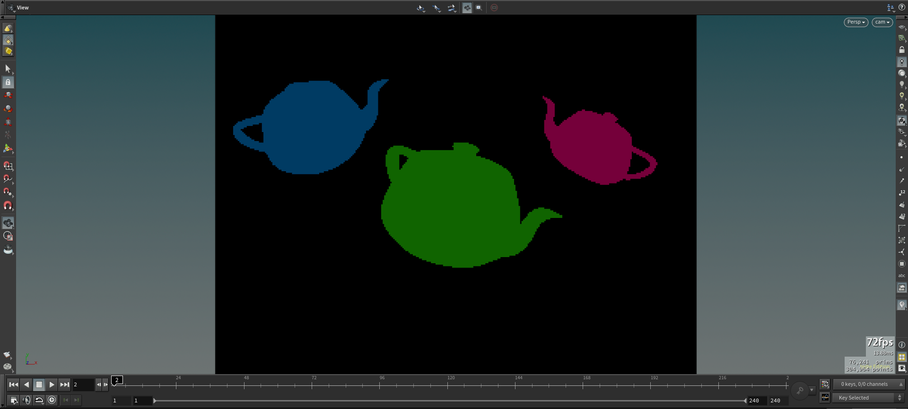
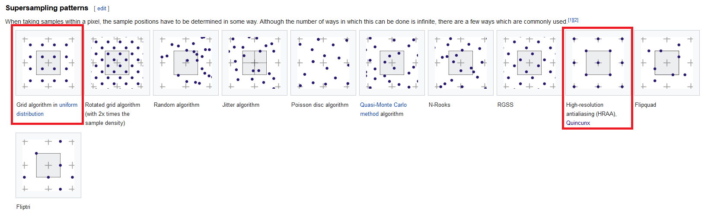
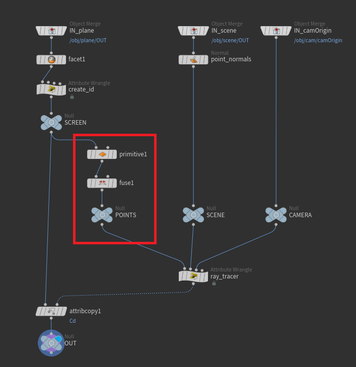
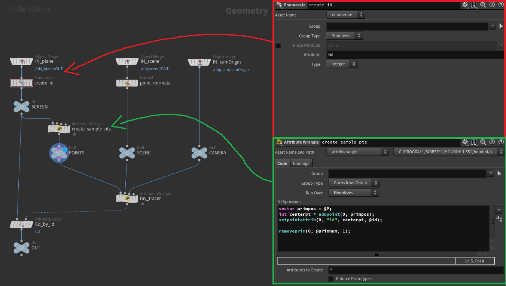
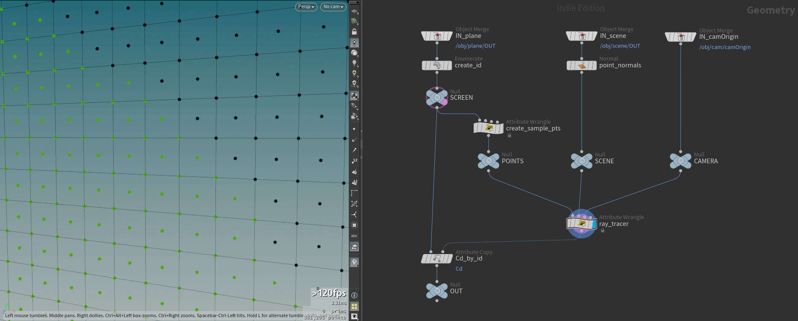
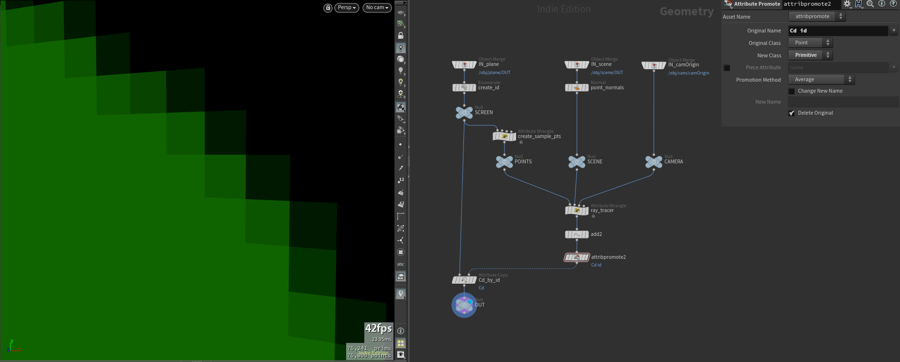
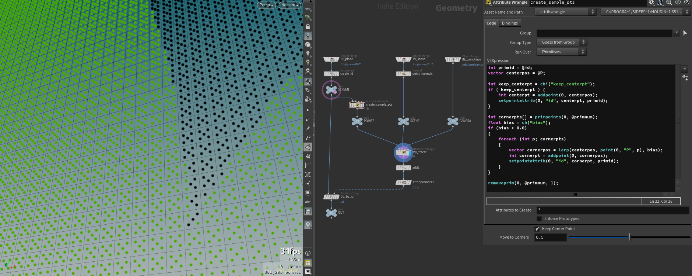
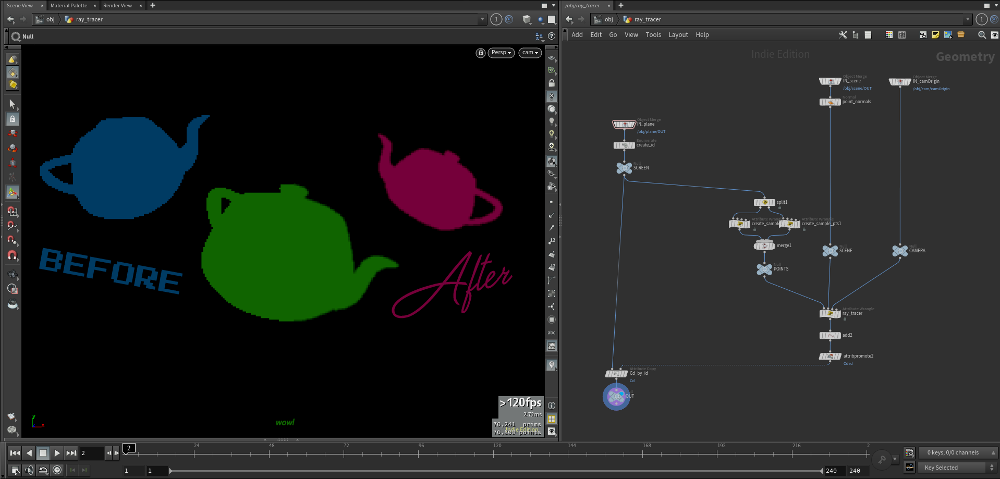

VEX Ray Tracer #3: Supersampling Anti-Aliasing
And we’re back. In the last part, we projected three teapots onto our plane and gathered the colour from the teapot’s Cd attribute. But what you probably noticed is that our objects have very jagged/pixelated edges.

That is because every pixel sends only a single ray in a single direction and hitting a single point before it reports back.
That’s where Supersampling comes into play.
The general idea of supersampling or SSAA (Supersampling Anti-Aliasing) is to instead of using a single ray to gather scene data, using multiple with slightly different offsets and directions. We then add all the gathered information together and average them to a single pixel.
E.g.: If four rays reach the center teapot, all rays will record green and the average remains green. But once we reach the edge of a teapot, maybe only 2 rays actually hit the teapot and the other two hit the black background. The average will be a darker green resulting in a nicer gradient on edges.
A problem I encountered the first time I wrote my ray tracer, is that if the resolution of your image is too small, supersampling can cause it to just look blurry so you do need a little bit of resolution on your projection plane.
One last thing we need to do before we get to coding is choosing a supersampling pattern. We can see some examples of those on Wikipedia (the whole article is very useful and I encourage looking through it for the pictures alone).

I will show you how to build the grid and the Quincunx (⁙) pattern, plus a custom combination of the two and a little explanation why and when I choose the ones I choose (and if it really matters in the end).
We did it. Now let’s go into Houdini and write some VEX.

You probably remember from part one that we took each primitive and scaled it down to a single point. Instead of doing that, let’s remove the primitive and the fuse SOP and put down a primitive wrangle and do just that with a single line of code.
addpoint(0, @P);
This simple line of VEX creates a single point in the position of each primitive which is interpolated from all its points and since we are working with squares, it’s reliable for us to use. One problem that persists is that the primitives themselves are not being removed. For that, just add another line of VEX.
removeprim(0, @primnum, 1);
This is now visually identical to our previous method. Unfortunately, if you take a look in our geometry spreadsheet, you will see that the id attribute that we use to later copy the colour back onto our plane is gone.
Let’s shuffle some more stuff around. Remove both the facet and the create_id wrangle from our screen input and replace it with an Enumerate SOP. Make sure the group type is set to Primitive and Attribute is id. Now that we id is on prims, we can easily add it to the new point we created by storing the new point in a variable and using the setpointattrib() function.
vector primpos = @P;
int centerpt = addpoint(0, primpos);
setpointattrib(0, "id", centerpt, @id);
removeprim(0, @primnum, 1);
Success, now we have one point per pixel with the corresponding ID to later copy over the colour.

We can now stay in this wrangle to create all the other sample points. Let’s start with the Quincunx pattern. One point in the center and one point for each corner of the pixel (see picture above).
We can use the primpoints() function to get an array of points connected to a primitive and spawn a new point at the same position.
[!tip] I like to template my screen (“SCREEN” Null SOP) to see where the points fall in relation to the pixel.
int cornerpts[] = primpoints(0, @primnum);
foreach (int p; cornerpts) {
vector cornerpos = point(0, "P", p);
addpoint(0, cornerpos);
}
Boom, too easy! let’s also add that id attribute from the primitive.
vector primpos = @P;
int primid = @id;
int centerpt = addpoint(0, primpos);
setpointattrib(0, "id", centerpt, primid);
int cornerpts[] = primpoints(0, @primnum);
foreach (int p; cornerpts)
{
vector cornerpos = point(0, "P", p);
int cornerpt = addpoint(0, cornerpos);
setpointattrib(0, "id", cornerpt, primid);
}
removeprim(0, @primnum, 1);
I also stored the primitive ID in the primid variable. I like to use variables of attributes whenever I use them more than once. Personal preference I guess :)
Before we tackle the second pattern, let’s set up the see this one in action first. We don’t need to do anything to the ray tracer since it will just treat the new points as more pixel points.

In the picture above you can see how some pixels now have multiple different color samples. Now we gotta average them out. Append an Add SOP to after the ray tracer. Navigate to the Polygons tab, toggle By Group, and set Add to By Attribute with Attribute Name ID. We now have a primitive drawn between all points that share the same id. We can now use that single primitive to store the average colour of each point by promoting the attribute.
Put down an Attribute Promote SOP and promote Cd from point to primitive with the promotion method set to Average. You should now see the primitive line change from a gradient colour to one solid one.
Since earlier we decided to switch from a point to a primitive id, we need to promote our id attribute as well so we can copy over from primitive to primitive. We can do that in the same Attribute Promote SOP since all points on one primitive should have the same ID already (that’s how we create them in the first place).
Wire our new setup into the attribute copy and change the source and destination type to primitive and voilà, we copied the averaged colour to the primitives.

Woah!
Okay, let’s go back to our sample points and build a little tool to compare and different methods. If you take another look at the patterns above, you can see that the corner points of the grid pattern is half way between the center point and the pixel’s corner. It’s also missing the center point.

Let’s go through this line after line.
int primid = @id;
vector centerpos = @P;
int keep_centerpt = chi("keep_centerpt");
if ( keep_centerpt ) {
int centerpt = addpoint(0, centerpos);
setpointattrib(0, "id", centerpt, primid);
}
Nothing new in the first two, but the centerpt creation and setting of the id attribute is now the result of an if-statement that you can toggle in the parameters below the code (see image).
int cornerpts[] = primpoints(0, @primnum);
float bias = ch("bias");
if (bias > 0.0) {
foreach (int p; cornerpts) {
vector cornerpos = lerp(centerpos, point(0, "P", p), bias);
int cornerpt = addpoint(0, cornerpos);
setpointattrib(0, "id", cornerpt, primid);
}
}
removeprim(0, @primnum, 1);
We create a float slider controlling the bias of linear interpolation inside the foreach-loop. I created it outside the foreach-loop so I can ignore it if it’s set to zero since as you can see later is that zero means all four corner points are in the center of the pixel in additionally to the centerpt which makes calculation 5x as slow as it needs to be at this point. We could make that threshold even higher since setting it to 0.001 would trigger the loop and still not really give a different result. I will probably leave it at 0.5 and forget about it. Inside the loop, instead of setting the cornerpos to the pixels corner, we now interpolate between the center and the pixel corner with that bias. Setting it to 0.5 gives us the same result as the grid pattern in the image in the beginning. Now you can play around with the bias and see what you like the most. Lowering the bias makes the edge harder. Removing the center point doesn’t make a huge difference but I like having the option.

We did it! Very cool! Thanks for reading!
< [[VEX Ray Tracer 02 - Plane Projection|Plane Projection]] | [[VEX Ray Tracer 04 - Blinn-Phong Shading|Blinn-Phong Shading]] >
References: Supersampling - Wikipedia